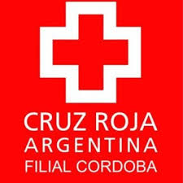

Ciudad Autónoma de Buenos Aires
Universidad de Buenos Aires (UBA) - Pública
Título de grado: Licenciado en Enfermería (5 años aprox.)
Título intermedio: Enfermero Universitario (3 años aprox.)
Ubicación: Tiene diversas sedes por lo que se sugiere averiguar cual es la más conveniente, más abajo tienen el link "más info"
Observaciones: La duración de la carrera según la página es de 4 años, aunque a esto se le debe agregar el conocido CBC de caracter obligatorio (1 año)
+ más info
Fundación Favaloro
Título de grado: Licenciado en Enfermería (4 años)
Título intermedio: Enfermero Universitario. (2 años y medio)
Contacto: Lunes, martes, miércoles, viernes de 8.30 a 18:30 hs y jueves de 8.30 a 17.30 hs - (011) 4378-1100
Mail: informes@favaloro.edu.ar
Ubicación: Av. Entre Ríos 495 PB, Monserrat, Comuna 1.
+ más info
Isalud
Título de grado: Licenciado en Enfermería (4 años y medio)
Título intermedio: Enfermero Universitario (3años)
Contacto: (011) 5239-4000
Mail: informes@isalud.edu.ar
Ubicación: Venezuela 847, Monserrat, Comuna 1.
+ más info
UCES
Título de grado: Licenciado en Enfermería (5 años)
Título intermedio: Enfermero Universitario (3 años y medio)
Contacto: Lun a Vier 09:00 a 20:00 horas - (011) 4813-0228 / 4814-9292
Mail: informes@uces.edu.ar
Ubicación: Paraguay 1401, Barrio Norte, Comuna 1.
+ más info
USAL
Título de grado: Licenciado en Enfermería (5 años)
Título intermedio: Enfermero Universitario. (3 años)
Contacto: 6074-0350 - Facebook
Mail: No figura en página
Ubicación: Av. Córdoba 1601, Barrio Norte, Comuna 1.
+ más info
UAI
Título de grado: Licenciado en Enfermería (5 años)
Título intermedio: Enfermero Universitario. (3 años)
Contacto: 09.00 a 19.00 Hs - (+54) 11 4342-7788
Mail: ingreso@uai.edu.ar
Ubicación para informes: Chacabuco 90 6° Piso, Microcentro, Comuna 1. (ver ubicación)
Ubicación de parte de la cursada: Portela 2975, Villa Lugano, Comuna 8. (ver ubicación)
+ más info
Escuela Grierson
Título: Enfermero Profesional (3 años)
Ubicación: Ambrosetti 601, Caballito, Comuna 6.
Observaciones: La forma de ingreso es a través de un sorteo realizado por el GCBA, cupos limitados, única institución que brinda subsidio. Título terciario, no universitario.
Contacto: (011) 4982-2309
Mail: No figura en página
+ más info
Universidad Maimonides
Título de grado: Licenciado en Enfermería (5 años)
Título intermedio: Enfermero Universitario. (3 años)
Contacto: De 14:30 a 18:30 hs (011) 4905-1100
Mail: enfermeria@maimonides.edu
Ubicación: Hidalgo 775, Caballito, Comuna 6.
+ más info
Instituto Tezza
Título: TECNICATURA SUPERIOR EN ENFERMERÍA (3 años)
Ubicación: Antonio Machado 628, Caballito, Comuna 6.
Contacto: 4982-1115 /1215 /1315 /6212
Mail: info@institutotezza.org.ar
+ más info
Instituto Universitario Hospital Italiano
Título de grado: Licenciado en Enfermería (5 años)
Título intermedio: Enfermero Universitario (3 años)
Ubicación: Potosí 4265, Planta Baja, Almagro, Comuna 6.
Contacto: (011) 4959-0200 Int. 9460/5323/4762
Mail: licenciatura.enfermería@hiba.org.ar
+ más info
Cruz Roja
Título: TECNICATURA SUPERIOR EN ENFERMERÍA (3 años)
Sede Once: Moreno 3363, Balvanera, Comuna 3.
Contacto: (011) 4863-7227 / 4863-7739 / 4867-2315 / 4866-2532
Mail: escuelacentral@cruzroja.org.ar
+ más info
Sede Saavedra: Quesada 2602, Saavedra, Comuna 12
Contacto: (011) 4544-1188 / 2535-9213
Mail: saavedra@cruzroja.org.ar
+ más info
CEMIC
Título de grado: Licenciado en Enfermería (5 años)
Título intermedio: Enfermero Universitario (3 años)
Ubicación: Valdenegro 4337, Saavedra, Comuna 12
Contacto: (011) 5299-0914/5
Mail: institutouniversitario@iuc.edu.ar
+ más info
Instituto Universitario de la Policía Federal Argentina - IUPFA
Título de grado: Licenciado en Enfermería (5 años)
Título intermedio: Enfermero Universitario (3 años)
Ubicación: Hospital Churruca, Uspallata 3400, Parque Patricios, Comuna 4.
Contacto: (011) 4905-5000
Mail: enfermaria@iupfa.edu.ar
+ más info
Gran Buenos Aires - Zona Norte
Cruz Roja
Título: Tecnicatura Superior en Enfermería (3 años)
Sede Vicente López: Remedios Escalada de San Martín 1411, Florida.
Contacto: (011) 4795-2086
Mail: v-lopez@cruzroja.org.ar
+ más info
Sede San Isidro: Rivadavia 454, San Isidro
Contacto: (011) 4743-7487
Mail: s-isidro@cruzroja.org.ar
+ más info
Universidad Austral
Título de grado: Licenciado en Enfermería (5 años)
Título intermedio: Enfermero Universitario (3 años)
Ubicación:Mariano Acosta 1611, Derqui, Pilar, Buenos Aires.
Contacto: (0230) 438 7032
Mail: mporto@austral.edu.ar
+ más info
Centro Universitario Vicente Lopez
Título de grado: Licenciado en Enfermería (4 años y medio)
Título intermedio: Enfermero Universitario (2 años y medio)
Observaciones: El título expedido es expedido por la UBA, por lo que es necesario realizar materias del CBC para iniciar la carrera.Ubicación: Carlos Villate 4480, Munro, Buenos Aires.
Contacto: 5197-1515 / 5197-1154 / 5197-1589 / 5197-1836
Mail: enfermeria@mvl.edu.ar
+ más info
Gran Buenos Aires - Zona Sur
Universidad de Lanus - UnLa
Título de grado: Licenciado en Enfermería (5 años)
Título intermedio: Enfermero Universitario (3 años)
Ubicación: 29 de Septiembre 3901, Remedios de Escalada, Lanús.
Contacto: (011) 5533-5600 int. 5120/5185.
Mail: enfermeria@unla.edu.ar
+ más info
UAI - Zona Sur
Título de grado: Licenciado en Enfermería (5 años)
Título intermedio: Enfermero Universitario (3 años)
Ubicación: Av. Pres. Hipólito Yrigoyen 9963, B1834GTA Temperley, Buenos Aires.
Contacto: (011) 4244-3966 / 4243-4827. Turnos: Tarde - Lunes a Viernes de 14 a 19 hs
Mail: ingreso@uai.edu.ar
+ más info
Universidad Nacional de Quilmes
Título de grado: Licenciado en Enfermería (5 años)
Título intermedio: Enfermero Universitario (3 años)
Ubicación: Roque Sáenz Peña 352, B1876 Bernal, Buenos Aires
Contacto: (011) 4365-7100
Mail: info@unq.edu.ar
+ más info
Universidad Nacional de Avellaneda
Título de grado: Licenciado en Enfermería (4 años)
Título intermedio: Enfermero Universitario (3 años)
Ubicación: 12 de Octubre 463, Avellaneda. Cómo llegar: http://undav.edu.ar/general/recursos/adjuntos/6666.pdf
Contacto: (011) 4201-7797
Mail: info@undav.edu.ar
+ más info
Cruz Roja
Título: Tecnicatura Superior en Enfermería (3 años)
Sede Lanús: Eva Perón, Villa de Luján y, B1824 Lanús Oeste, Buenos Aires.
Contacto: (011) 4241-2536
Mail: lanus@cruzroja.org.ar
Sede Lomas de Zamora: Sáenz 749.
Contacto: (011) 4244-3105
Mail: ld-zamora@cruzroja.org.ar.
+ más info
Gran Buenos Aires - Zona Oeste
Universidad de Morón
Título de grado: Licenciado en Enfermería (4 años)
Título intermedio: Enfermero (3 años)
Ubicación: Cabildo 134, Morón, Buenos Aires, Argentina
Contacto: (011) 5627-2000. Horarios de atención: de lunes a jueves de 8 a 21, viernes de 8 a 20 y sábado de 8 a 12
Mail: Infocarreras@unimoron.edu.ar
+ más info
Universidad 3 de febrero
Título de grado: Licenciado en Enfermería (5 años)
Título intermedio: Enfermero (3 años)
Ubicación: Av. Gral. Mosconi, Sáenz Peña, Provincia de Buenos Aires
Contacto: (011) 4759-3528/3537/3578/0040
Mail: enfermeria@untref.edu.ar
+ más info
Universidad Nacional del Oeste
Título de grado: Licenciado en Enfermería (5 años)
Título intermedio: Enfermero (3 años)
Ubicación: Córdoba 1055, Merlo, Buenos Aires.
Contacto: (0220) 485.6195. Horario de 08:00 a 20:00hs
Mail: escueladecienciasdelasalud@uno.edu.ar
+ más info
Universidad Nacional de La Matanza
Título de grado: Licenciado en Enfermería (5 años)
Título intermedio: Enfermero (3 años)
Ubicación: Florencio Varela 1903, San Justo, Buenos Aires.
Contacto: 4480-8900, interno 8603 / 8648
Mail: enfermeria@unlam.edu.ar
+ más info
Instituto Terciario de Salud
Título intermedio: Enfermero (3 años)
Ubicación: España 572, Moreno, Buenos Aires.
Contacto: 0237-4624735 - 037-4622022
Mail: info@itssalud.edu.ar
+ más info
Interior de Buenos Aires
Universidad Nacional Noroeste - Buenos Aires
Título de grado: Licenciado en Enfermería (5 años)
Título intermedio: Enfermero (3 años)
Ubicación: Monteagudo 2772, Pergamino, Buenos Aires
Contacto: 2477 40-9500
Mail: iadh@unnoba.edu.ar
+ más info
Córdoba
Universidad Nacional de Córdoba - Facultad de Medicina - Escuela de Enfermería
Título de grado: Licenciado en Enfermería (5 años)
Título intermedio: Enfermero Profesional (3 años)
Ubicación: Av. Raúl, Av. Haya de la Torre N°533, Córdoba.
Contacto: 351 8076060
Mail: admestudiantes@gmail.com
+ más info
IUCBC - Instituto Universitario de Ciencias Biomédicas de Córdoba
Título intermedio: Enfermero Profesional (3 años)
Ubicación: Naciones Unidas 400-440, Córdoba.
Contacto: 0810-222-7748 / 0351 4688260
Mail: tecnicaturas@iucbc.edu.ar
+ más info
Universidad Nacional de Córdoba - Facultad de Medicina - Escuela de Enfermería
Título intermedio: Enfermero Profesional (3 años)
Ubicación: Defensa esquina Cacheuta B° Villa el Libertador.
Contacto: 0351 – 4343128
Mail: itscordoba2015@gmail.com
+ más info

Cruz Roja - Filial Córdoba
Título intermedio: Enfermero Profesional (3 años)
Ubicación: Juan de Garay 2096, B° Pueyrredón, Córdoba.
Contacto: 4231798/4253893
Mail: educa.cordoba@cruzroja.org.ar
+ más info
Santa Fe